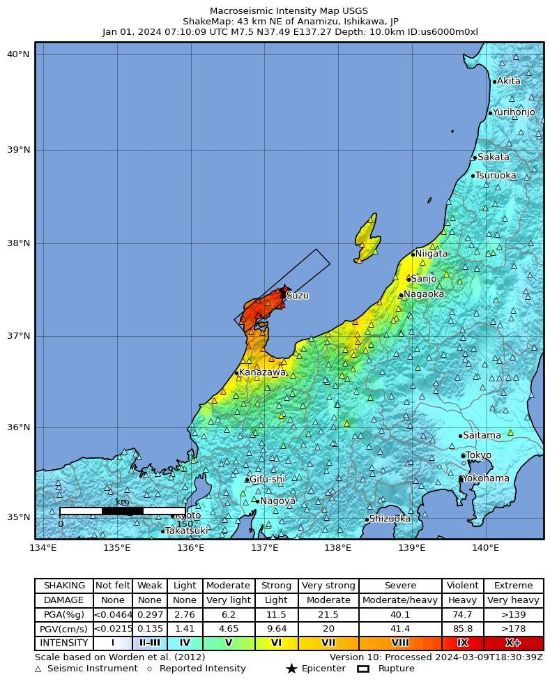
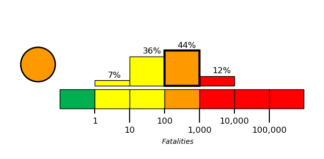
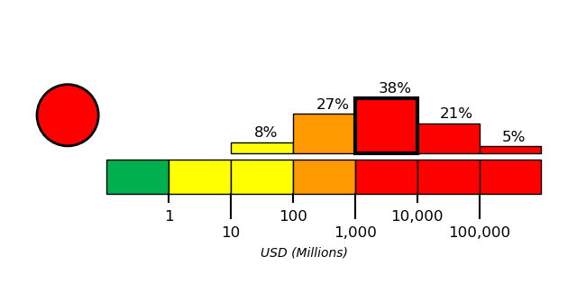

On January 1, 2024, at approximately 8:10 local time, a magnitude 7.5 earthquake, with a depth of 10 km, occurred in Japan Earthquake. The coordinate of epicenter of the earthquake was 37.49N, 137.27E.
The North America plate, Pacific plate, Philippine Sea plate, and Eurasia plate all influence the tectonic setting of Japan, Taiwan, and the surrounding area. Some authors divide the edges of these plates into several microplates that together take up the overall relative motions between the larger tectonic blocks, including the Okhotsk microplate in northern Japan, the Okinawa microplate in southern Japan, the Yangzee microplate in the area of the East China Sea, and the Amur microplate in the area of the Sea of Japan.
The seafloor expression of the boundary between the Pacific and North America plates lies 300 km off the east coasts of Hokkaido and Honshu at the Kuril-Kamchatka and Japan trenches. The subduction of the Pacific plate beneath the North America plate, at rates of 83-90 mm/yr, generates abundant seismicity, predominantly as a result of interplate slip along the interface between the plates. The 1958 M 8.4 Etorofu, 1963 M 8.6 Kuril, 2003 M 8.3 Tokachi-Oki, and the 2011 M 9.0 Tohoku earthquakes all exemplify such megathrust seismicity. The 1933 M 8.4 Sanriku-Oki earthquake and the 1994 M 8.3 Shikotan earthquake are examples of intraplate seismicity, caused by deformation within the lithosphere of the subducting Pacific plate (Sanriku-Oki) and of the overriding North America plate (Shikotan), respectively.
At the southern terminus of the Japan Trench the intersection of the Pacific, North America, and Philippine Sea plates forms the Boso Triple Junction, the only example of a trench-trench-trench intersection in the world. South of the triple junction the Pacific plate subducts beneath the Philippine Sea plate at the Izu-Ogasawara trench, at rates of 45-56 mm/yr. This margin is noteworthy because of the steep dip of the subducting Pacific plate (70° or greater below depths of 50 km depth), and because of its heterogeneous seismicity; few earthquakes above M 7 occur at shallow depths, yet many occur below 400 km. The lack of large shallow megathrust earthquakes may be a result of weak coupling at the plate interface, or simply a reflection of an incomplete earthquake catalog with respect to the length of typical seismic cycles.
The northernmost section of the Philippine Sea plate shares a 350 km boundary with the North America plate that runs approximately east-west from the Boso Triple Junction towards the Izu Peninsula. This short boundary is dominated by the subduction of the Philippine Sea plate beneath Japan along the Sagami Trough, but also includes small sections of transform motion.
The subduction of the Philippine Sea plate under the Eurasia plate begins at the Suruga Trough, immediately southwest of the Izu peninsula. In the northern Tōkai, Tonankai and Nankai sections of this subduction zone, historical data indicate M 8+ earthquake recurrence intervals of 100-150 years. The Tonankai and Nankai sections last ruptured in M 8.1 earthquakes in 1944 and 1946, respectively, while the Tōkai section last broke in 1854. In the 1980's studies began to forecast the imminence of a large earthquake in the Tōkai region, and warned of its potential impact on the cities of Tokyo and Yokohama (the two largest cities in Japan); to date, the expected event has not occurred.
The boundary between the Philippine Sea and Eurasia plates continues south and southwestwards from the Suruga Trough, extending 2000 km along the Nankai and Ryukyu trenches before reaching the island of Taiwan. Along the Ryukyu Trench, the Philippine Sea plate exhibits trench normal subduction at rates increasing from 48 mm/yr in the northeast to 65 mm/yr in the southwest. Convergence and the associated back-arc deformation west of the oceanic trench creates the Ryukyu Islands and the Okinawa Trough. The largest historic event observed along this subduction zone was the M 8.1 Kikai Island earthquake in 1911.
In the vicinity of Taiwan the structure of the Philippine Sea: Eurasia plate boundary and the associated pattern of seismicity becomes more complex. 400 km east of Taiwan a clockwise rotation in the trend of the margin (from NE-SW to E-W), paired with an increase in subduction obliquity creates a section of the plate boundary that exhibits dextral transform and oblique thrusting motions. South of Taiwan the polarity of subduction flips; the Eurasia plate subducts beneath the Philippine Sea plate. Debate surrounds contrasting models of the plate boundary position between the zones of oppositely verging subduction, and the boundary's relation to patterns of seismicity. Many studies propose that crustal thickening causes the majority of regional seismicity, while others attribute seismicity to deformation associated with subduction. Another resolution proposes a tear in the Philippine Sea plate and a complex assortment of subduction, transform, and collisional motion. All the models concede that seismicity around the island of Taiwan is anomalously shallow, with few earthquakes deeper than 70km.
While there are no instances of an earthquake M>8 in the modern record, Taiwan and its surrounding region have experienced eight M>7.5 events between 1900 and 2014. The dominance of shallow M<8 earthquakes suggests fairly weak plate boundary coupling, with most earthquakes caused by internal plate deformation. The 1935 M 7.1 Hsinchu-Taichung earthquake and the 1999 M 7.6 Chi-Chi Earthquake both exemplify the shallow continental crust thrust faulting that dominates regional seismicity across the island. A major tectonic feature of the island is the Longitudinal Valley Fault, which ruptures frequently in small, shallow earthquakes. In 1951, the Longitudinal Valley Fault hosted twelve M≥6 events known as the Hualien-Taitung earthquake sequence.
Large earthquakes in the vicinity of Japan and Taiwan have been both destructive and deadly. The regions high population density makes shallow earthquakes especially dangerous. Since 1900 there have been 13 earthquakes (9 in Japan, 4 in Taiwan) that have each caused over 1000 fatalities, leading to a total of nearly 200,000 earthquake related deaths. In January 1995 an earthquake that ruptured a southern branch of the Japan Median Tectonic Line near the city of Kobe (population 1.5 million) killed over 5000 people. The 1923 Kanto earthquake shook both Yokohama (population 500,000, at that time) and Tokyo (population 2.1 million), killing 142,000 people. The earthquake also started fires that burned down 90% of the buildings in Yokohama and 40% of the buildings in Tokyo. Most recently, the M9.0 Tohoku earthquake, which ruptured a 400 km stretch of the subduction zone plate boundary east of Honshu, and the tsunami it generated caused over 20,000 fatalities.

Building damage was reported across western Japan, including thousands of damaged buildings and more than 1,500 houses reported as collapsed or damaged [12][13]. The heaviest damage was identified in Ishikawa prefecture, particularly Wajima city, where structural damage, building collapses, and a large fire were reported [1][3][5]. On the Noto Peninsula on Honshu, reports described buildings as destroyed, toppled, or razed by a major blaze, with associated infrastructure disruption [2][9][11]. The Wajima Morning Market in Wajima city, Ishikawa prefecture, was burned down by a large blaze following the earthquakes [4], and buildings in Wajima were described as in shambles, including Minamidani’s seafood store [7]. In Suzu City, Ishikawa prefecture, rescuers found a woman beneath a collapsed two-story house, also described as a two-story home with the victim trapped beneath the first floor [6][8]. Additional damage from ground shaking and liquefaction was observed in Niigata and Toyama, and tsunami inundation affected many shoreline buildings, especially in Wajima, Suzu, and Noto [5][10].
Nuclear power facilities along the Sea of Japan shoreline were reported to have sustained minor earthquake-related damage, including leaks of water used to cool nuclear fuel and a partial power shutdown at one plant [14][18]. Reported incidents also included overflow or spillovers of cooling water from spent fuel pools and transformer anomalies at nuclear power plants in Ishikawa, Fukui, and Niigata prefectures; Shika and Kashiwazaki-Kariwa were specifically identified as experiencing spent-fuel-pool cooling-water spillovers after the 2024 Noto Peninsula Earthquake [15]. At the Shika plant, Hokuriku Electric Power Company initially reported no change in water intake but later acknowledged a three-meter rise in water level associated with absorbing seawater used for cooling plant equipment [15]. Chihiro Kamisawa of the Citizens' Nuclear Information Center characterized the Shika plant power supply as very fragile [15]. Official statements differed from incident reports, with the Nuclear Regulation Authority reporting no abnormalities and no radiation-level increases, and Kansai Electric also reporting no abnormalities in affected-region plants [15][16][17].
Casualty reporting evolved substantially during the first week after the New Year’s Day earthquake in central Japan, with early reports citing more than 100 deaths and more than 200 missing, followed by an official Monday update of 168 confirmed deaths and 323 missing persons.[20][22] Later figures from Ishikawa Prefecture authorities reported at least 203 deaths and 68 people missing, which is the most recent and specific casualty count provided in the source set.[24] Fatalities were concentrated in Wajima and Suzu, where search and rescue operations were also focused, and more than 500 people were reported injured.[22] The earthquake caused severe community displacement and sheltering needs across Ishikawa and the wider affected area.[19][29] Thousands of people made homeless were still coping with fatigue and uncertainty one week after the event, while another report stated that about 33,000 people had left their homes.[19][23] More than 28,800 people in Ishikawa evacuated to government shelters, and thousands remained in shelters as disrupted roads and communication lines left authorities without contact with at least 2,300 people.[29][30] Tens of thousands of disaster-affected residents were still reported to be struggling, underscoring continuing disruption to daily life.[28] Immediate response operations included continued search and rescue in Ishikawa, particularly in Wajima and Suzu, but adverse winter conditions complicated those efforts.[21][22][30] Heavy snowfall in earthquake-affected areas hampered rescue operations as the death toll rose, and snow was also reported to have complicated rescue work during the period when authorities listed 161 fatalities.[26][30] One notable rescue outcome was reported in Suzu City, where a woman survived under rubble and emerged alive nearly five days after the earthquake.[27] Longer-term recovery pressures were also indicated by widespread infrastructure and utility impacts, including flattened houses, damaged infrastructure, and thousands left without power.[31] The event also generated substantial economic recovery implications for property losses.[25] Verisk’s Extreme Event Solutions business unit estimated insured property losses from the January 1 M7.5 earthquake near the Noto Peninsula in Ishikawa Prefecture at JPY 260 billion to JPY 480 billion, equivalent to approximately USD 1.8 billion to USD 3.3 billion.[25]
USGS PAGER tool estimated the fatalities to be in the orange alert level, which is most likely between 100 and 1,000 with a probability of 44%.
USGS PAGER tool estimated the economic loss to be in the red alert level, which is most likely between 1,000 and 10,000 million dollars with a probability of 38%.

